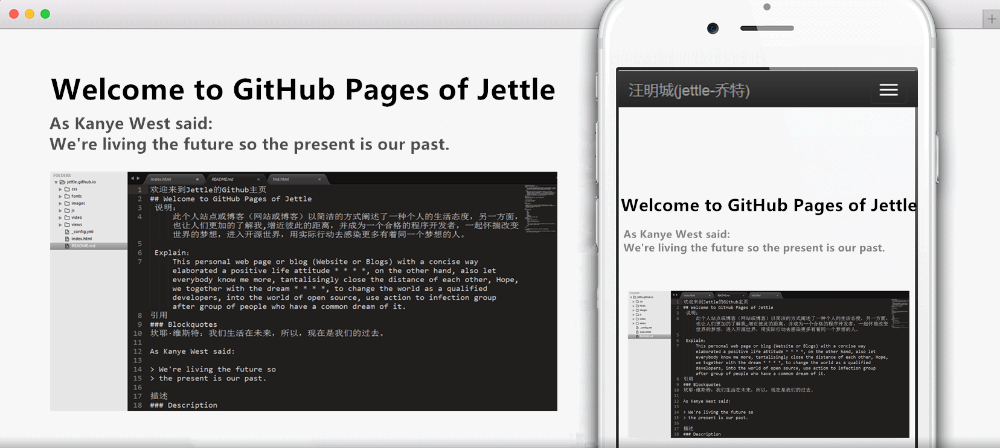

《iUESC》— Ultimate Education of south china
《iUESC》— Ultimate Education of south china是一个在线教学网站，以计算机科学与技术为主，包括：原创作品的发布、报酬比例的增长、直播教学、科技资讯及前辈在线指导。

新版《新闻管理系统》
此项目是一个新闻发布系统，能够自由编辑、发布文章，由前端和后端两大部分构成，前端部分主要是网页布局及文章的分布，后端主要是管理用户、管理员及文章，包括：编辑、删除、增加用户及管理员，编辑、删除及发布文章。

《个人受骗几率检测小程序》
在参加《第七届“挑战杯”大学生课外学术科技作品竞赛》的过程中，我们研究的课题是“大学生对诈骗的判断意识和受骗几率的调查与对策分析”，基于大量的问卷调查，因此，“个人受骗几率检测小程序”则是在以上背景下开发的，此小程序需要被测者填写一份简短的调查内容，然后程序已经被测者的“数据”与问卷调查数据库中的“数据”对比，继而计算出此位被测者的受骗概率。

欢迎来到Jettle的Github主页
在Github主页，主要介绍了一些开发者的基本信息，也收藏了感兴趣的开源项目。